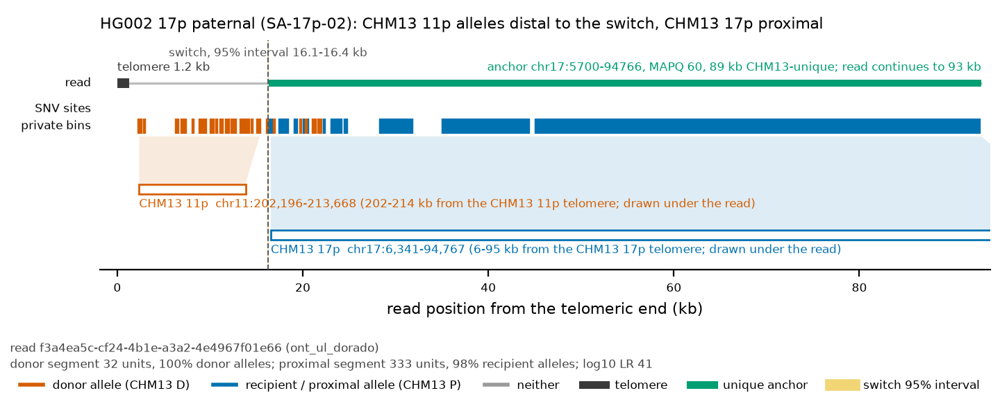
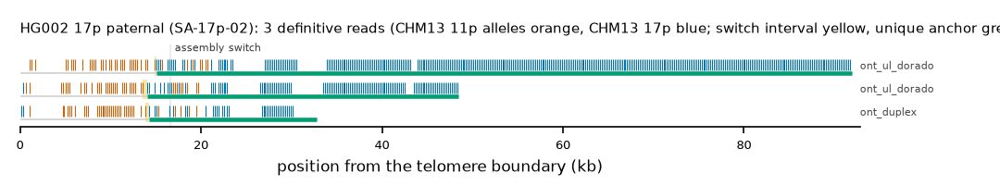

HG002 17p paternal: SA-17p-02
Claim HG002#1#chr17_PATERNAL#L. All claims
- cohort
- HG002 Q100
- individual
- HG002
- haplotype
- paternal
- arm
- 17p
- allele
- SA-17p-02 (foreign)
- model
- donor CHM13 11p, proximal CHM13 17p, recipient CHM13 17p, pattern DP
- claimed end(s)
HG002#1#chr17_PATERNAL#L- assembly switch
- 20,251 bp from the telomere boundary; on CHM13 chr17:5582; own-window projection 16500-16700 bp
- v1 verdict
- confirmed (confirmed)
- definitive tier
- definitive (>= 2 datasets)
- reads
- 7 conclusive switch-concordant, 19 discordant, 0 contradicting, 54 consistent; 3 definitive (ont_duplex,ont_ul_dorado)
- by tier
- definitive:3;conclusive_unique_anchor_off_end:4;conclusive_discordant:19;consistent:54
- source
- HG002 Q100 v1.1 public read alignments (16 files; 12 independent datasets after molecule de-duplication)


Conclusive and contradicting reads (26)
81 further reads are consistent (switch test passed, but no terminal telomere, anchor or integrity); they are
listed in reads.tsv.gz. Switch: 95% interval in subtelomere coordinates (kb from the
telomere boundary) and projected on CHM13 17p. Each samtools command prints the read's record
from its public file (CRAM: add the CHM13 v2.0 FASTA as -T).
| read | dataset | tier | length | switch (subtelomere, kb) | switch on CHM13 | donor units / purity | proximal units / purity | anchor (CHM13, MAPQ, unique) | own-assembly best end | fetch |
|---|---|---|---|---|---|---|---|---|---|---|
eb68b377-3746-4671-8c67-6fc458e4b992;bcc38a28-2d93-4c23-be1b-4ac75015ef83 | ont_duplex | definitive | 33,183 | 13.9-14.3 | chr17:5437-5837 | 34 / 0.94 | 39 / 0.87 | chr17:5838-36292, 60, 30.5 kb | HG002#1#chr17_PATERNAL#L (99.9%) ✓ | samtoolssamtools view -F 0x900 -X 'https://human-pangenomics.s3.amazonaws.com/T2T/HG002/assemblies/polishing/HG002/v1.1/mapping/ont_r10_duplex/hg002v1.1_ont_r10_duplex.pri.bam' 'https://human-pangenomics.s3.amazonaws.com/T2T/HG002/assemblies/polishing/HG002/v1.1/mapping/ont_r10_duplex/hg002v1.1_ont_r10_duplex.pri.bam.bai' 'chr17_PATERNAL:1-51001' | awk -v r='eb68b377-3746-4671-8c67-6fc458e4b992;bcc38a28-2d93-4c23-be1b-4ac75015ef83' '$1==r' |
f3a4ea5c-cf24-4b1e-a3a2-4e4967f01e66 | ont_ul_dorado | definitive | 93,188 | 14.9-15.1 | chr17:5943-6143 | 32 / 1.00 | 333 / 0.98 | chr17:5700-94766, 60, 89.1 kb | HG002#1#chr17_PATERNAL#L (99.2%) ✓ | samtoolssamtools view -F 0x900 -X 'https://human-pangenomics.s3.amazonaws.com/T2T/HG002/assemblies/polishing/HG002/v1.1/mapping/ont_r10_ul_dorado/hg002v1.1_ont_r10_ul_dorado.pri.bam' 'https://human-pangenomics.s3.amazonaws.com/T2T/HG002/assemblies/polishing/HG002/v1.1/mapping/ont_r10_ul_dorado/hg002v1.1_ont_r10_ul_dorado.pri.bam.bai' 'chr17_PATERNAL:1-51001' | awk -v r='f3a4ea5c-cf24-4b1e-a3a2-4e4967f01e66' '$1==r' |
2c63b082-2c60-4211-8e56-5c15d502d166 | ont_ul_dorado | definitive | 49,856 | 13.5-14.1 | chr17:5139-5739 | 31 / 0.97 | 116 / 0.93 | chr17:5741-51762, 60, 46.0 kb | HG002#1#chr17_PATERNAL#L (98.9%) ✓ | samtoolssamtools view -F 0x900 -X 'https://human-pangenomics.s3.amazonaws.com/T2T/HG002/assemblies/polishing/HG002/v1.1/mapping/ont_r10_ul_dorado/hg002v1.1_ont_r10_ul_dorado.pri.bam' 'https://human-pangenomics.s3.amazonaws.com/T2T/HG002/assemblies/polishing/HG002/v1.1/mapping/ont_r10_ul_dorado/hg002v1.1_ont_r10_ul_dorado.pri.bam.bai' 'chr17_PATERNAL:1-51001' | awk -v r='2c63b082-2c60-4211-8e56-5c15d502d166' '$1==r' |
6bd85a8e-55d0-44a2-b8c5-ca60cb3dcedf | ont_ul_dorado | conclusive, places on another end | 123,298 | 12.9-14.7 | chr17:4008-5808 | 29 / 1.00 | 450 / 0.99 | chr17:5809-120600, 60, 114.8 kb | HG002#2#chr17_MATERNAL#L (96.5%) (not claimed end) | samtoolssamtools view -F 0x900 -X 'https://human-pangenomics.s3.amazonaws.com/T2T/HG002/assemblies/polishing/HG002/v1.1/mapping/ont_r10_ul_dorado/hg002v1.1_ont_r10_ul_dorado.pri.bam' 'https://human-pangenomics.s3.amazonaws.com/T2T/HG002/assemblies/polishing/HG002/v1.1/mapping/ont_r10_ul_dorado/hg002v1.1_ont_r10_ul_dorado.pri.bam.bai' 'chr17_PATERNAL:1-51001' | awk -v r='6bd85a8e-55d0-44a2-b8c5-ca60cb3dcedf' '$1==r' |
96089fdc-d6b3-4dd0-ad5f-0a9de9b7ad79 | ont_ul_dorado | conclusive, places on another end | 163,565 | 14.5-14.7 | chr17:5938-6138 | 37 / 0.89 | 626 / 0.99 | chr17:5394-156476, 60, 151.1 kb | HG002#2#chr17_MATERNAL#L (96.7%) (not claimed end) | samtoolssamtools view -F 0x900 -X 'https://human-pangenomics.s3.amazonaws.com/T2T/HG002/assemblies/polishing/HG002/v1.1/mapping/ont_r10_ul_dorado/hg002v1.1_ont_r10_ul_dorado.pri.bam' 'https://human-pangenomics.s3.amazonaws.com/T2T/HG002/assemblies/polishing/HG002/v1.1/mapping/ont_r10_ul_dorado/hg002v1.1_ont_r10_ul_dorado.pri.bam.bai' 'chr17_PATERNAL:1-51001' | awk -v r='96089fdc-d6b3-4dd0-ad5f-0a9de9b7ad79' '$1==r' |
28538fd1-59b5-42fa-9aaa-9a3b50ccce59 | ont_ul_dorado | conclusive, places on another end | 139,752 | 13.5-14.1 | chr17:5138-5738 | 31 / 0.97 | 508 / 0.98 | chr17:5741-133342, 60, 127.6 kb | HG002#2#chr17_MATERNAL#L (96.9%) (not claimed end) | samtoolssamtools view -F 0x900 -X 'https://human-pangenomics.s3.amazonaws.com/T2T/HG002/assemblies/polishing/HG002/v1.1/mapping/ont_r10_ul_dorado/hg002v1.1_ont_r10_ul_dorado.pri.bam' 'https://human-pangenomics.s3.amazonaws.com/T2T/HG002/assemblies/polishing/HG002/v1.1/mapping/ont_r10_ul_dorado/hg002v1.1_ont_r10_ul_dorado.pri.bam.bai' 'chr17_PATERNAL:1-51001' | awk -v r='28538fd1-59b5-42fa-9aaa-9a3b50ccce59' '$1==r' |
b1d14c13-2495-4780-8113-5fffd9673a7b | ont_ul_dorado | conclusive, places on another end | 109,302 | 13.9-15.3 | chr17:5367-6767 | 34 / 0.91 | 406 / 0.98 | chr17:5407-110781, 60, 105.4 kb | HG002#2#chr17_MATERNAL#L (96.9%) (not claimed end) | samtoolssamtools view -F 0x900 -X 'https://human-pangenomics.s3.amazonaws.com/T2T/HG002/assemblies/polishing/HG002/v1.1/mapping/ont_r10_ul_dorado/hg002v1.1_ont_r10_ul_dorado.pri.bam' 'https://human-pangenomics.s3.amazonaws.com/T2T/HG002/assemblies/polishing/HG002/v1.1/mapping/ont_r10_ul_dorado/hg002v1.1_ont_r10_ul_dorado.pri.bam.bai' 'chr17_PATERNAL:1-51001' | awk -v r='b1d14c13-2495-4780-8113-5fffd9673a7b' '$1==r' |
caf003ee-1a4e-496c-b0c9-06eecec5c129 | ont_r941_recall | conclusive, switch-discordant | 73,217 | 23.7-27.5 | chr17:11845-15645 | 44 / 0.93 | 186 / 1.00 | chr17:29680-71437, 60, 41.8 kb | HG002#1#chr17_PATERNAL#L (98.0%) ✓ | samtoolssamtools view -F 0x900 -X 'https://human-pangenomics.s3.amazonaws.com/T2T/HG002/assemblies/polishing/HG002/v1.1/mapping/ont_methylation_recall_oct2024/03_08_22_R941_HG002.pri.bam' 'https://human-pangenomics.s3.amazonaws.com/T2T/HG002/assemblies/polishing/HG002/v1.1/mapping/ont_methylation_recall_oct2024/03_08_22_R941_HG002.pri.bam.bai' 'chr17_PATERNAL:1-51001' | awk -v r='caf003ee-1a4e-496c-b0c9-06eecec5c129' '$1==r' |
6c261b98-fe5f-40a3-8013-a8b618516987 | ont_r941_recall | conclusive, switch-discordant | 99,351 | 23.7-23.9 | chr17:11768-11968 | 42 / 0.88 | 318 / 1.00 | chr17:11843-97501, 60, 85.7 kb | HG002#1#chr17_PATERNAL#L (96.0%) ✓ | samtoolssamtools view -F 0x900 -X 'https://human-pangenomics.s3.amazonaws.com/T2T/HG002/assemblies/polishing/HG002/v1.1/mapping/ont_methylation_recall_oct2024/03_08_22_R941_HG002.pri.bam' 'https://human-pangenomics.s3.amazonaws.com/T2T/HG002/assemblies/polishing/HG002/v1.1/mapping/ont_methylation_recall_oct2024/03_08_22_R941_HG002.pri.bam.bai' 'chr17_PATERNAL:1-51001' | awk -v r='6c261b98-fe5f-40a3-8013-a8b618516987' '$1==r' |
49398b7e-a5a7-4668-a933-f77331783880 | ont_r941_recall | conclusive, switch-discordant | 74,279 | 22.9-27.7 | chr17:10916-15716 | 43 / 0.91 | 195 / 1.00 | chr17:29625-72879, 60, 43.3 kb | HG002#1#chr17_PATERNAL#L (98.1%) ✓ | samtoolssamtools view -F 0x900 -X 'https://human-pangenomics.s3.amazonaws.com/T2T/HG002/assemblies/polishing/HG002/v1.1/mapping/ont_methylation_recall_oct2024/03_08_22_R941_HG002.pri.bam' 'https://human-pangenomics.s3.amazonaws.com/T2T/HG002/assemblies/polishing/HG002/v1.1/mapping/ont_methylation_recall_oct2024/03_08_22_R941_HG002.pri.bam.bai' 'chr17_PATERNAL:1-51001' | awk -v r='49398b7e-a5a7-4668-a933-f77331783880' '$1==r' |
6d855288-8e27-4d9e-855e-f32b0fc208e2 | ont_r941_recall | conclusive, switch-discordant | 43,764 | 26.3-29.9 | chr17:12073-15673 | 44 / 0.91 | 49 / 1.00 | chr17:29012-43279, 60, 14.3 kb | HG002#1#chr17_PATERNAL#L (95.1%) ✓ | samtoolssamtools view -F 0x900 -X 'https://human-pangenomics.s3.amazonaws.com/T2T/HG002/assemblies/polishing/HG002/v1.1/mapping/ont_methylation_recall_oct2024/03_08_22_R941_HG002.pri.bam' 'https://human-pangenomics.s3.amazonaws.com/T2T/HG002/assemblies/polishing/HG002/v1.1/mapping/ont_methylation_recall_oct2024/03_08_22_R941_HG002.pri.bam.bai' 'chr17_PATERNAL:1-51001' | awk -v r='6d855288-8e27-4d9e-855e-f32b0fc208e2' '$1==r' |
f5d509d9-1fa4-434a-8e44-32c190fbd40f | ont_r941_recall | conclusive, switch-discordant | 50,995 | 26.5-30.1 | chr17:12078-15678 | 38 / 0.89 | 80 / 1.00 | chr17:29929-50185, 60, 20.3 kb | HG002#1#chr17_PATERNAL#L (95.0%) ✓ | samtoolssamtools view -F 0x900 -X 'https://human-pangenomics.s3.amazonaws.com/T2T/HG002/assemblies/polishing/HG002/v1.1/mapping/ont_methylation_recall_oct2024/03_08_22_R941_HG002.pri.bam' 'https://human-pangenomics.s3.amazonaws.com/T2T/HG002/assemblies/polishing/HG002/v1.1/mapping/ont_methylation_recall_oct2024/03_08_22_R941_HG002.pri.bam.bai' 'chr17_PATERNAL:1-51001' | awk -v r='f5d509d9-1fa4-434a-8e44-32c190fbd40f' '$1==r' |
b0984f60-afeb-412d-a658-b5435d11f51d | ont_r941_recall | conclusive, switch-discordant | 98,519 | 21.9-22.9 | chr17:10992-11992 | 44 / 0.93 | 331 / 1.00 | chr17:11867-100915, 60, 89.0 kb | HG002#1#chr17_PATERNAL#L (93.8%) ✓ | samtoolssamtools view -F 0x900 -X 'https://human-pangenomics.s3.amazonaws.com/T2T/HG002/assemblies/polishing/HG002/v1.1/mapping/ont_methylation_recall_oct2024/03_08_22_R941_HG002.pri.bam' 'https://human-pangenomics.s3.amazonaws.com/T2T/HG002/assemblies/polishing/HG002/v1.1/mapping/ont_methylation_recall_oct2024/03_08_22_R941_HG002.pri.bam.bai' 'chr17_PATERNAL:1-51001' | awk -v r='b0984f60-afeb-412d-a658-b5435d11f51d' '$1==r' |
025ccf23-2295-4b63-8946-823878bc6712 | ont_r941_recall | conclusive, switch-discordant | 122,732 | 25.9-29.5 | chr17:12031-15631 | 38 / 0.95 | 405 / 1.00 | chr17:30360-117749, 60, 87.4 kb | HG002#2#chr17_MATERNAL#L (90.5%) (not claimed end) | samtoolssamtools view -F 0x900 -X 'https://human-pangenomics.s3.amazonaws.com/T2T/HG002/assemblies/polishing/HG002/v1.1/mapping/ont_methylation_recall_oct2024/03_08_22_R941_HG002.pri.bam' 'https://human-pangenomics.s3.amazonaws.com/T2T/HG002/assemblies/polishing/HG002/v1.1/mapping/ont_methylation_recall_oct2024/03_08_22_R941_HG002.pri.bam.bai' 'chr17_PATERNAL:1-51001' | awk -v r='025ccf23-2295-4b63-8946-823878bc6712' '$1==r' |
01c019c2-826d-4733-970d-1b20d3dd804a | ont_r941_recall | conclusive, switch-discordant | 106,104 | 22.5-26.3 | chr17:11782-15582 | 44 / 0.93 | 350 / 1.00 | chr17:30129-104828, 60, 74.7 kb | HG002#2#chr17_MATERNAL#L (91.5%) (not claimed end) | samtoolssamtools view -F 0x900 -X 'https://human-pangenomics.s3.amazonaws.com/T2T/HG002/assemblies/polishing/HG002/v1.1/mapping/ont_methylation_recall_oct2024/03_08_22_R941_HG002.pri.bam' 'https://human-pangenomics.s3.amazonaws.com/T2T/HG002/assemblies/polishing/HG002/v1.1/mapping/ont_methylation_recall_oct2024/03_08_22_R941_HG002.pri.bam.bai' 'chr17_PATERNAL:1-51001' | awk -v r='01c019c2-826d-4733-970d-1b20d3dd804a' '$1==r' |
6b72cb26-f327-47e7-bfdc-6107e6bfb66b | ont_r941_recall | conclusive, switch-discordant | 124,956 | 21.9-25.9 | chr17:11709-15709 | 38 / 1.00 | 419 / 1.00 | chr17:29620-120621, 60, 91.0 kb | HG002#2#chr17_MATERNAL#L (88.7%) (not claimed end) | samtoolssamtools view -F 0x900 -X 'https://human-pangenomics.s3.amazonaws.com/T2T/HG002/assemblies/polishing/HG002/v1.1/mapping/ont_methylation_recall_oct2024/03_08_22_R941_HG002.pri.bam' 'https://human-pangenomics.s3.amazonaws.com/T2T/HG002/assemblies/polishing/HG002/v1.1/mapping/ont_methylation_recall_oct2024/03_08_22_R941_HG002.pri.bam.bai' 'chr17_PATERNAL:1-51001' | awk -v r='6b72cb26-f327-47e7-bfdc-6107e6bfb66b' '$1==r' |
0853f3f3-423b-4e78-b455-baa665435419 | ont_ul_dorado | conclusive, switch-discordant | 167,284 | 21.7-22.9 | chr17:10848-12048 | 43 / 0.93 | 609 / 1.00 | chr17:12049-159717, 60, 147.7 kb | HG002#2#chr17_MATERNAL#L (95.5%) (not claimed end) | samtoolssamtools view -F 0x900 -X 'https://human-pangenomics.s3.amazonaws.com/T2T/HG002/assemblies/polishing/HG002/v1.1/mapping/ont_r10_ul_dorado/hg002v1.1_ont_r10_ul_dorado.pri.bam' 'https://human-pangenomics.s3.amazonaws.com/T2T/HG002/assemblies/polishing/HG002/v1.1/mapping/ont_r10_ul_dorado/hg002v1.1_ont_r10_ul_dorado.pri.bam.bai' 'chr17_PATERNAL:1-51001' | awk -v r='0853f3f3-423b-4e78-b455-baa665435419' '$1==r' |
c379b99b-d105-45f5-807a-22bda5b396f6 | ont_ul_dorado | conclusive, switch-discordant | 225,674 | 22.3-27.1 | chr17:10890-15690 | 47 / 0.89 | 890 / 1.00 | chr17:29030-225669, 60, 196.6 kb | HG002#2#chr17_MATERNAL#L (96.5%) (not claimed end) | samtoolssamtools view -F 0x900 -X 'https://human-pangenomics.s3.amazonaws.com/T2T/HG002/assemblies/polishing/HG002/v1.1/mapping/ont_r10_ul_dorado/hg002v1.1_ont_r10_ul_dorado.pri.bam' 'https://human-pangenomics.s3.amazonaws.com/T2T/HG002/assemblies/polishing/HG002/v1.1/mapping/ont_r10_ul_dorado/hg002v1.1_ont_r10_ul_dorado.pri.bam.bai' 'chr17_PATERNAL:1-51001' | awk -v r='c379b99b-d105-45f5-807a-22bda5b396f6' '$1==r' |
30b2f55c-be7a-4611-b14d-ef9ac02b6777 | ont_ul_dorado | conclusive, switch-discordant | 86,660 | 22.7-27.1 | chr17:11356-15756 | 49 / 0.96 | 272 / 1.00 | chr17:29665-88531, 60, 58.9 kb | HG002#1#chr17_PATERNAL#L (97.9%) ✓ | samtoolssamtools view -F 0x900 -X 'https://human-pangenomics.s3.amazonaws.com/T2T/HG002/assemblies/polishing/HG002/v1.1/mapping/ont_r10_ul_dorado/hg002v1.1_ont_r10_ul_dorado.pri.bam' 'https://human-pangenomics.s3.amazonaws.com/T2T/HG002/assemblies/polishing/HG002/v1.1/mapping/ont_r10_ul_dorado/hg002v1.1_ont_r10_ul_dorado.pri.bam.bai' 'chr17_PATERNAL:1-51001' | awk -v r='30b2f55c-be7a-4611-b14d-ef9ac02b6777' '$1==r' |
19c76d00-789b-409b-ba03-fffc08f5543a | ont_ul_dorado | conclusive, switch-discordant | 83,894 | 22.1-26.5 | chr17:11294-15694 | 41 / 0.88 | 259 / 1.00 | chr17:30058-85962, 60, 55.9 kb | HG002#1#chr17_PATERNAL#L (98.6%) ✓ | samtoolssamtools view -F 0x900 -X 'https://human-pangenomics.s3.amazonaws.com/T2T/HG002/assemblies/polishing/HG002/v1.1/mapping/ont_r10_ul_dorado/hg002v1.1_ont_r10_ul_dorado.pri.bam' 'https://human-pangenomics.s3.amazonaws.com/T2T/HG002/assemblies/polishing/HG002/v1.1/mapping/ont_r10_ul_dorado/hg002v1.1_ont_r10_ul_dorado.pri.bam.bai' 'chr17_PATERNAL:1-51001' | awk -v r='19c76d00-789b-409b-ba03-fffc08f5543a' '$1==r' |
1c0b24e9-d233-4f6e-a848-4f54c802464d | ont_ul_dorado | conclusive, switch-discordant | 266,149 | 19.9-20.5 | chr17:9152-9752 | 44 / 0.89 | 1,010 / 1.00 | chr17:9060-269851, 60, 260.8 kb | HG002#2#chr17_MATERNAL#L (96.7%) (not claimed end) | samtoolssamtools view -F 0x900 -X 'https://human-pangenomics.s3.amazonaws.com/T2T/HG002/assemblies/polishing/HG002/v1.1/mapping/ont_r10_ul_dorado/hg002v1.1_ont_r10_ul_dorado.pri.bam' 'https://human-pangenomics.s3.amazonaws.com/T2T/HG002/assemblies/polishing/HG002/v1.1/mapping/ont_r10_ul_dorado/hg002v1.1_ont_r10_ul_dorado.pri.bam.bai' 'chr17_PATERNAL:1-51001' | awk -v r='1c0b24e9-d233-4f6e-a848-4f54c802464d' '$1==r' |
be5e6058-d78a-45d0-8285-4d194392c2fd | ont_ul_dorado | conclusive, switch-discordant | 115,649 | 21.9-22.3 | chr17:11645-12045 | 48 / 0.83 | 399 / 1.00 | chr17:11350-114178, 60, 102.8 kb | HG002#2#chr17_MATERNAL#L (95.2%) (not claimed end) | samtoolssamtools view -F 0x900 -X 'https://human-pangenomics.s3.amazonaws.com/T2T/HG002/assemblies/polishing/HG002/v1.1/mapping/ont_r10_ul_dorado/hg002v1.1_ont_r10_ul_dorado.pri.bam' 'https://human-pangenomics.s3.amazonaws.com/T2T/HG002/assemblies/polishing/HG002/v1.1/mapping/ont_r10_ul_dorado/hg002v1.1_ont_r10_ul_dorado.pri.bam.bai' 'chr17_PATERNAL:1-51001' | awk -v r='be5e6058-d78a-45d0-8285-4d194392c2fd' '$1==r' |
a9525521-b596-49f4-89e8-aa0b8d9099c8 | ont_ul_dorado | conclusive, switch-discordant | 261,317 | 22.3-22.5 | chr17:11288-11488 | 45 / 0.84 | 1,008 / 1.00 | chr17:11363-262008, 60, 250.6 kb | HG002#2#chr17_MATERNAL#L (96.9%) (not claimed end) | samtoolssamtools view -F 0x900 -X 'https://human-pangenomics.s3.amazonaws.com/T2T/HG002/assemblies/polishing/HG002/v1.1/mapping/ont_r10_ul_dorado/hg002v1.1_ont_r10_ul_dorado.pri.bam' 'https://human-pangenomics.s3.amazonaws.com/T2T/HG002/assemblies/polishing/HG002/v1.1/mapping/ont_r10_ul_dorado/hg002v1.1_ont_r10_ul_dorado.pri.bam.bai' 'chr17_PATERNAL:1-51001' | awk -v r='a9525521-b596-49f4-89e8-aa0b8d9099c8' '$1==r' |
c689c8d2-e923-4fe8-a9e7-dc93504b4907 | ont_ul_dorado | conclusive, switch-discordant | 118,487 | 22.5-22.9 | chr17:11800-12200 | 47 / 0.81 | 410 / 1.00 | chr17:12201-116976, 60, 104.8 kb | HG002#2#chr17_MATERNAL#L (96.1%) (not claimed end) | samtoolssamtools view -F 0x900 -X 'https://human-pangenomics.s3.amazonaws.com/T2T/HG002/assemblies/polishing/HG002/v1.1/mapping/ont_r10_ul_dorado/hg002v1.1_ont_r10_ul_dorado.pri.bam' 'https://human-pangenomics.s3.amazonaws.com/T2T/HG002/assemblies/polishing/HG002/v1.1/mapping/ont_r10_ul_dorado/hg002v1.1_ont_r10_ul_dorado.pri.bam.bai' 'chr17_PATERNAL:1-51001' | awk -v r='c689c8d2-e923-4fe8-a9e7-dc93504b4907' '$1==r' |
e944744e-95be-4140-b385-097705325789 | ont_ul_dorado | conclusive, switch-discordant | 66,533 | 21.7-21.9 | chr17:10994-11194 | 44 / 0.89 | 182 / 1.00 | chr17:10565-69393, 60, 58.8 kb | HG002#1#chr17_PATERNAL#L (98.4%) ✓ | samtoolssamtools view -F 0x900 -X 'https://human-pangenomics.s3.amazonaws.com/T2T/HG002/assemblies/polishing/HG002/v1.1/mapping/ont_r10_ul_dorado/hg002v1.1_ont_r10_ul_dorado.pri.bam' 'https://human-pangenomics.s3.amazonaws.com/T2T/HG002/assemblies/polishing/HG002/v1.1/mapping/ont_r10_ul_dorado/hg002v1.1_ont_r10_ul_dorado.pri.bam.bai' 'chr17_PATERNAL:1-51001' | awk -v r='e944744e-95be-4140-b385-097705325789' '$1==r' |
fb78b03b-899c-4916-bd86-9ae4eeef8897 | ont_ul_dorado | conclusive, switch-discordant | 38,772 | 23.1-26.5 | chr17:12330-15730 | 43 / 0.81 | 43 / 1.00 | chr17:29524-41960, 60, 12.4 kb | HG002#1#chr17_PATERNAL#L (99.0%) ✓ | samtoolssamtools view -F 0x900 -X 'https://human-pangenomics.s3.amazonaws.com/T2T/HG002/assemblies/polishing/HG002/v1.1/mapping/ont_r10_ul_dorado/hg002v1.1_ont_r10_ul_dorado.pri.bam' 'https://human-pangenomics.s3.amazonaws.com/T2T/HG002/assemblies/polishing/HG002/v1.1/mapping/ont_r10_ul_dorado/hg002v1.1_ont_r10_ul_dorado.pri.bam.bai' 'chr17_PATERNAL:1-51001' | awk -v r='fb78b03b-899c-4916-bd86-9ae4eeef8897' '$1==r' |
Files and IGV
This is a showcase claim: its reads are in the repository under evidence/showcase/HG002_1_chr17_PATERNAL_L/ with IGV sessions CHM13 v2.0 (loci chr11:192105-227761 and chr17:1-82945) and own assembly, and a what-you-should-see note. Split at the switch, the distal segments of 3 of 3 showcase reads align to CHM13 11p and the proximal segments of 3 to CHM13 17p at MAPQ 60.
Re-derive this verdict
git clone https://github.com/jlanej/human-subtelomere-atlas && cd human-subtelomere-atlas
evidence/replicate_claim.sh 'HG002#1#chr17_PATERNAL#L'The script fetches the cited reads from the public source by region and read ID, re-runs the frozen criteria and compares every per-read and claim verdict with this page (details).